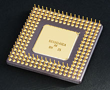

1.11.5. Полупроводниковые микросхемы
Полупроводниковая микросхема — все элементы и межэлементные соединения выполнены на одном полупроводниковом кристалле (например, кремния, германия, арсенида галлия, оксид гафния). Первая советская полупроводниковая микросхема была создана в 1961 году в Таганрогском радиотехническом институте, в лаборатории Л. Н. Колесова.
Полупроводниковые микросхемы изготавливают из особо чистых полупроводниковых материалов (обычно кремний, германий), в которых перестраивают саму решётку кристаллов так, что отдельные области кристалла становятся элементами сложной схемы. Маленькая пластинка из кристаллического материала размерами ~1 мм2 превращается в сложнейший электронный прибор, эквивалентный радиотехническому блоку из 50-100 и более обычных деталей. Он способен усиливать или генерировать сигналы и выполнять многие другие радиотехнические функции. Технология изготовления микросхемы обеспечивает одновременную групповую обработку сразу большого количества схем. Это определяет в значительной степени идентичность схем по характеристикам. Микросхемы имеют высокую надёжность за счёт использования планарного процесса изготовления и значительного сокращения числа микросоединений элементов в процессе создания схем. Полупроводниковые микросхемы развиваются в направлении всё большей концентрации элементов в одном и том же объёме полупроводникового кристалла, т. е. в направлении повышения степени интеграциимикросхемы Разработаны микросхемы, содержащие в одном кристалле сотни и тысячи элементов. В этом случае микросхемы превращается в большую интегральную систему (БИС), которую невозможно разрабатывать и изготовлять без использования электронных вычислительных машин высокой производительности.
Подложки полупроводниковых микросхем обычно выполняют из монокристаллического кремния p-типа. Изготовление электронно-дырочных переходов полупроводниковых ИМС осуществляют обычно посредством эпитаксиального наращивания или способом диффузионно-планарной технологии. Планарная технология подразумевает создание деталей и электрических соединений в подложке в одной плоскости. Эпитаксиальное наращивание заключено в напылении разогретого полупроводника на некоторые участки поверхности подложки. Диффузионная технология состоит в проникновении разогретых газообразных примесей в отведённые для этого участки подложки. В результате возникают многослойные образования, каждый слой которых обладает заданным типом проводимости. Резисторы, конденсаторы и прочие пассивные компоненты полупроводниковых ИМС обладают много большими габаритами, чем активные компоненты, такие как транзисторы. С целью минимизации размеров диоды в полупроводниковых ИМС предпочитают заменять транзисторами в диодном включении.
Интегральные микросхемы на транзисторах со структурой металл - диэлектрик - полупроводник (МДП) получили широкое распространение, и их производство составляет значительную долю продукции электронной промышленности. Они занимают доминирующее положение при выпуске таких изделий микроэлектроники, как полупроводниковые оперативные (ОЗУ) и постоянные запоминающие устройства (ПЗУ), БИС электронных микрокалькуляторов, БИС микропроцессорных наборов.